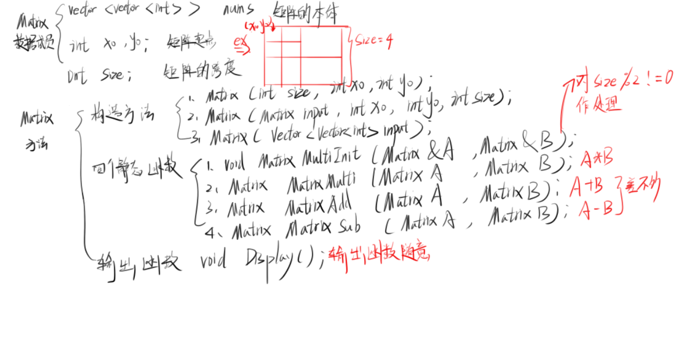
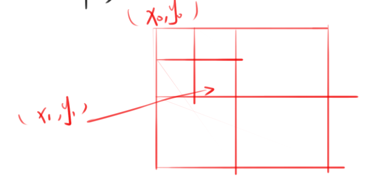

由于偷懒不想用泛型，所以直接用了整型来写了一份
①首先你得有一个矩阵的class Matrix
②Matrix为了方便用下标进行运算，
Matrix的结构如图：(我知道我的字丑。。。)

Matrix.h代码如下：(个人并不喜欢把代码全写在一块，对于阅读者是相当巨大的负担，其实自己受不了（逃）)
1 #pragma once
2 #include<vector>
3 using namespace std;
4 class Matrix
5 {
6 public:
7 vector<vector<int>> nums;
8 int x0, y0;
9
10 int size;
11 Matrix();
12 ~Matrix();
13 Matrix(int size, int x0, int y0);
14 Matrix(Matrix input, int x0, int y0, int size);
15 Matrix(vector<vector<int>>input);
16 void Display();
17 static void MatrixMultiInit(Matrix &A, Matrix &B);
18 static Matrix MatrixMulti(Matrix A, Matrix B);
19 static Matrix MatrixAdd(Matrix A, Matrix B);
20 static Matrix MatrixSub(Matrix A, Matrix B);
21 };
Matrix.cpp对类的实现
一，构造，析构函数
1 Matrix::Matrix()
2 {
3 }
4
5
6 Matrix::~Matrix()
7 {
8 }
9
10 Matrix::Matrix(int size, int x0, int y0)
11 {
12 vector<vector<int>> temp(size, *new vector<int>(size));
13 for (int i = 0; i < size; i++)
14 for (int j = 0; j < size; j++)
15 temp[i][j] = 0;
16 this->nums = temp;
17 this->x0 = x0;
18 this->y0 = y0;
19 this->size = size;
20
21 }
22
23 Matrix::Matrix(Matrix input, int x0, int y0, int size)
24 {
25 this->nums = input.nums;
26 this->x0 = x0;
27 this->y0 = y0;
28 this->size = size;
29 }
30
31 Matrix::Matrix(vector<vector<int>> input)
32 {
33 this->nums = input;
34 this->x0 = 0;
35 this->y0 = 0;
36 this->size = input.size();
37 }
二，A+B，A-B实现
1 Matrix Matrix::MatrixAdd(Matrix A, Matrix B)
2 {
3 Matrix result(A.size, 0, 0);
4 for (int i = 0; i < result.nums.size(); i++)
5 for (int j = 0; j < result.nums.size(); j++)
6 result.nums[i][j] = A.nums[A.x0 + i][A.y0 + j] + B.nums[B.x0 + i][B.y0 + j];
7 return result;
8 }
9
10 Matrix Matrix::MatrixSub(Matrix A, Matrix B)
11 {
12
13 Matrix result(A.size, 0, 0);
14 for (int i = 0; i < result.nums.size(); i++)
15 for (int j = 0; j < result.nums.size(); j++)
16 result.nums[i][j] = A.nums[A.x0 + i][A.y0 + j] - B.nums[B.x0 + i][B.y0 + j];
17 return result;
18 }
三，A*B的实现
1 Matrix Matrix::MatrixMulti(Matrix A, Matrix B)
2 {
3 int n = A.size;
4 int halfsize =n / 2;
5 Matrix result(n, 0, 0);
6 if (n == 1)
7 result.nums[0][0] = A.nums[A.x0][A.y0] * B.nums[B.x0][B.y0];
8 else
9 {
10 Matrix tempS[10];
11 for (int i = 0; i < 10; i++)
12 {
13 tempS[i] = *new Matrix(halfsize, 0, 0);
14 }
15
16 //00-- A.x0,A.y0,halfsize
17 //01-- A.x0,A.y0+halfsize,halfsize
18 //10-- A.x0+halfsize,A.y0,halfsize
19 //11-- A.x0+halfsize,A.y0+halfsize,halfsize
20
21 //00-- B.x0,B.y0,halfsize
22 //01-- B.x0,B.y0+halfsize,halfsize
23 //10-- B.x0+halfsize,B.y0,halfsize
24 //11-- B.x0+halfsize,B.y0+halfsize,halfsize
25 tempS[0] = tempS[0].MatrixSub(*new Matrix(B, B.x0, B.y0 + halfsize, halfsize), *new Matrix(B, B.x0 + halfsize, B.y0 + halfsize, halfsize));//01-11 B
26 tempS[1] = tempS[1].MatrixAdd(*new Matrix(A, A.x0, A.y0, halfsize), *new Matrix(A, A.x0, A.y0 + halfsize, halfsize));//00+01 A
27 tempS[2] = tempS[2].MatrixAdd(*new Matrix(A, A.x0 + halfsize, A.y0, halfsize), *new Matrix(A, A.x0 + halfsize, A.y0 + halfsize, halfsize));//10+11 A
28 tempS[3] = tempS[3].MatrixSub(*new Matrix(B, B.x0 + halfsize, B.y0, halfsize), *new Matrix(B, B.x0, B.y0, halfsize));//10-00 B
29 tempS[4] = tempS[4].MatrixAdd(*new Matrix(A, A.x0, A.y0, halfsize), *new Matrix(A, A.x0 + halfsize, A.y0 + halfsize, halfsize));//00+11 A
30 tempS[5] = tempS[5].MatrixAdd(*new Matrix(B, B.x0, B.y0, halfsize), *new Matrix(B, B.x0 + halfsize, B.y0 + halfsize, halfsize));//00+11 B
31 tempS[6] = tempS[6].MatrixSub(*new Matrix(A, A.x0, A.y0 + halfsize, halfsize), *new Matrix(A, A.x0 + halfsize, A.y0 + halfsize, halfsize));//01-11 A
32 tempS[7] = tempS[7].MatrixAdd(*new Matrix(B, B.x0 + halfsize, B.y0, halfsize), *new Matrix(B, B.x0 + halfsize, B.y0 + halfsize, halfsize));//10+11 B
33 tempS[8] = tempS[8].MatrixSub(*new Matrix(A, A.x0, A.y0, halfsize), *new Matrix(A, A.x0 + halfsize, A.y0, halfsize));//00-10 A
34 tempS[9] = tempS[9].MatrixAdd(*new Matrix(B, B.x0, B.y0, halfsize), *new Matrix(B, B.x0, B.y0 + halfsize, halfsize));//00+01 B
35
36
37 Matrix tempP[7];
38 for (int i = 0; i < 7; i++)
39 {
40 tempP[i] = *new Matrix(n / 2, 0, 0);
41 }
42 tempP[0] = tempP[0].MatrixMulti(*new Matrix(A, A.x0, A.y0, halfsize), *new Matrix(tempS[0], 0, 0, halfsize));
43 tempP[1] = tempP[1].MatrixMulti(*new Matrix(tempS[1], 0, 0,halfsize), *new Matrix(B, B.x0 + halfsize, B.y0 + halfsize, halfsize));
44 tempP[2] = tempP[2].MatrixMulti(*new Matrix(tempS[2], 0, 0, halfsize), *new Matrix(B, B.x0, B.y0, halfsize));
45 tempP[3] = tempP[3].MatrixMulti(*new Matrix(A, A.x0 + halfsize, A.y0 + halfsize, halfsize), *new Matrix(tempS[3], 0, 0, halfsize));
46 tempP[4] = tempP[4].MatrixMulti(*new Matrix(tempS[4], 0, 0, halfsize), *new Matrix(tempS[5], 0, 0, halfsize));
47 tempP[5] = tempP[5].MatrixMulti(*new Matrix(tempS[6], 0, 0, halfsize), *new Matrix(tempS[7], 0, 0, halfsize));
48 tempP[6] = tempP[6].MatrixMulti(*new Matrix(tempS[8], 0, 0, halfsize), *new Matrix(tempS[9], 0, 0, halfsize));
49
50
51
52 Matrix result00 = result00.MatrixAdd(tempP[4], tempP[3]);
53 result00 = result00.MatrixSub(result00, tempP[1]);
54 result00 = result00.MatrixAdd(result00, tempP[5]);
55 Matrix result01 = result01.MatrixAdd(tempP[0], tempP[1]);
56 Matrix result10 = result10.MatrixAdd(tempP[2], tempP[3]);
57 Matrix result11 = result11.MatrixAdd(tempP[4], tempP[0]);
58 result11 = result11.MatrixSub(result11, tempP[2]);
59 result11 = result11.MatrixSub(result11, tempP[6]);
60
61 if (n == 3) {
62 for(int i=0;i<n/2+1;i++)
63 for (int j = 0; j < n / 2 + 1; j++) {
64
65 result.nums[i][j]= result00.nums[i][j];
66 result.nums[i][j+n/2+1] = result01.nums[i][j];
67 result.nums[i+n/2+1][j] = result10.nums[i][j];
68 result.nums[i+n/2+1][j+n/2+1] = result11.nums[i][j];
69 }
70 }
71
72 for(int i=0;i<n/2;i++)
73 for (int j = 0; j < n / 2; j++) {
74
75 result.nums[i][j]= result00.nums[i][j];
76 result.nums[i][j+n/2] = result01.nums[i][j];
77 result.nums[i+n/2][j] = result10.nums[i][j];
78 result.nums[i+n/2][j+n/2] = result11.nums[i][j];
79 }
80
81 }
82 return result;
83 }
四，防止size%2！=0的处理函数（即矩阵的行列数为奇数）
1 void Matrix::MatrixMultiInit(Matrix &A, Matrix &B) {
2
3 if (A.nums.size() % 2 != 0)
4 {
5 for (int i = 0; i < A.nums.size(); i++)
6 A.nums[i].push_back(0);
7 for (int i = 0; i < B.nums.size(); i++)
8 B.nums[i].push_back(0);
9 A.nums.push_back(*new vector<int>(A.nums[0].size(), 0));
10 B.nums.push_back(*new vector<int>(B.nums[0].size(), 0));
11 A.size++;
12 B.size++;
13 }
14 }
五，输出函数（这个读者随意）
1 void Matrix::Display()
2 {
3 for (int i = 0; i < this->nums.size(); i++) {
4
5 cout << "||";
6 for (int j = 0; j < this->nums[i].size(); j++) {
7 cout << this->nums[i][j] << " ";
8 }
9 cout << "||" << endl;
10
11 }
12 }
六，测试函数
1 #include <iostream>
2 #include"Matrix.h"
3 int main()
4 {
5 vector<vector<int>> input = {
6 {1,2,3},
7 {1,2,3},
8 {1,1,1},
9 };
10 Matrix test0 (input);
11 Matrix test1 (input);
12 Matrix test2;
13 test2.MatrixMultiInit(test0, test1);
14 test2= test2.MatrixMulti(test0, test1);
15 test2.Display();
16
17 }
本人比较愚笨，耗时一天半才完成，不知道是不是天气热的原因，人太燥了，沉不下心来思考bug。
A*B有一点需要注意的是分块的逻辑应该怎么表示，一开始我用了两个顶点来表示一个矩阵的分块，如图：

然后halfsize还得一个一个的算，然后自己敲错的几率还会加大，并且还不一定表示正确每个分块，然后就逼疯自己了。
感觉这两天被这一堆bug都弄自闭了。。。。
幸好还是撑过来了，这算是我啃算法导论的第一个坎吧。
幸好第二天在csdn里面看到了别人怎么分块的。看到了一个变量halfsize，于是才开始改自己Matrix的构造。
虽然一开始不愿意，但是改完之后，竟然一次过了！woc！
给我了一个教训，以后能“少”一个变量尽量“少”一个变量。